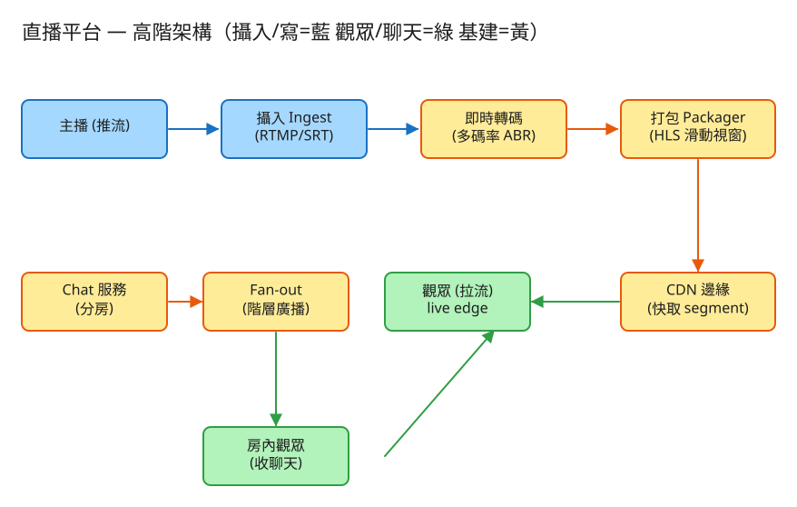

㉑ 直播平台（Twitch / 抖音） · 初學者友善版
D 串流計算/儲存分發
看故事就懂
輕鬆讀 28 分鐘
🧠 這份怎麼讀？
這份用「大腦比較好吸收」的方式重寫：先講生活比喻 → 把系統拆成小關卡 → 邊讀邊考自己。
分成兩部分：Part 1 概念（這系統在幹嘛）、Part 2 工程細節（怎麼真的蓋出來，一樣白話）。
遇到 💭 停一下 就先自己想 3 秒再往下看——這叫「提取練習」，比一直往下滑記得更牢。
1. 60 秒搞懂它在幹嘛
想像你是一個路邊小吃攤的老闆。客人（觀眾）一個接一個來，你邊煮邊出菜——客人吃的永遠是你剛剛這幾分鐘炒出來的菜，
沒有「冰箱裡的存貨」可以慢慢挑。這就是直播：主播此刻才產生畫面，觀眾只能看到「最新的這幾秒」。
直播平台（Twitch、抖音、YouTube Live）要做三件難事：把主播這一刻的畫面切成小片、一直送出去；
同一場可能有幾百萬人同時看；而且觀眾還會邊看邊在聊天室刷字，一句話要同時送給滿房間的人。
🔑 一句話
直播 = 邊煮邊出菜的即時餐廳：主播畫面被切成「幾秒一段」的小菜不停端出，幾百萬人同時就近取用，旁邊還有一個吵翻天的聊天室。
2. 為什麼直播比「看影片」難？
很多人想：「看 YouTube 影片不也是看影像嗎？直播能難到哪去？」差別其實很大——
🍱 便當店 vs 現炒攤
看 YouTube 影片（VOD）像去便當店：所有菜早就煮好擺在櫃裡，你可以挑、可以指定要哪一格、想吃哪段倒回去重看都行。
直播像現炒攤：菜此刻才在鍋裡，還沒炒的根本不存在，你只能吃「剛起鍋的這幾道」，沒辦法倒帶到開店第一道菜。
所以直播的根本難點是：影片「不存在於未來」。便當店可以提前把每道菜都做好幾種份量（預先轉檔），直播沒辦法——
主播的下一句話、下一個畫面，此刻都還沒發生，只能邊產生邊處理邊送。
再加上：觀眾希望愈即時愈好（你在彈幕喊「快躲！」主播要馬上看到才有互動感）。所以這題真正在比的，是「能多即時」跟「畫面能多穩」之間的拉扯。
💭 停一下：為什麼直播沒辦法像 YouTube 影片那樣「先把所有畫質版本都轉好再放」？
看答案
因為影片內容此刻才產生，主播下一秒講什麼還沒發生，根本沒有「完整的片」可以提前轉。只能邊收到主播畫面、邊即時轉成各種畫質、邊切片送出去。這就是「無法預轉碼」——和便當店可以提前備好所有菜的根本差別。
3. 把系統拆成 4 個關卡
別被「直播系統」嚇到。整件事其實就是闖 4 關，一關一關來：
1收畫面：主播把畫面送進來（攝入）
主播用 OBS 或手機 App 把畫面一路推給平台。這條「主播 → 平台」的管子叫攝入（Ingest）。
🚚 比喻就像食材供應商不停把新鮮食材送進廚房。這條送貨車道絕對不能斷——一斷，後面整間店就沒菜可炒、整場直播直接黑掉。所以這條路要準備備用車道。
👉 小知識：送畫面的「協定」有好幾種（RTMP 最通用、SRT 抗網路抖動、WebRTC 最即時）。先記住「就是把主播畫面送進來的那條管子」就好。
2處理：邊收邊轉成多種畫質 + 切成小片（轉碼 + 打包）
收到主播原始畫面後，平台要馬上做兩件事：轉成多種畫質（1080p / 720p / 480p…）、再把畫面切成「幾秒一段」的小片。
🍳 比喻：現炒攤邊煮邊出菜
廚師不會等整桌菜全炒完才一次端出（那觀眾要等到天荒地老）。而是炒好一小盤就先端一盤，客人馬上有得吃。
直播也一樣：每2 秒就切出一小片畫面立刻送出，不必等整段。
為什麼要轉「多種畫質」？因為觀眾網路有快有慢。網路好的吃高畫質大盤、網路差的吃低畫質小盤，各取所需才不會卡。
3送出去：一直更新的「播放清單」+ 全球就近取（manifest + CDN）
小片切好了，怎麼讓觀眾知道「現在有哪幾片可以看」？靠一張一直在更新的菜單，工程上叫 manifest（播放清單，副檔名 .m3u8）。
📋 比喻：菜單一直加新菜、舊菜下架
攤子前掛一張菜單，上面只寫「現在有的最新幾道菜」。每炒出一道新菜，就把它加到菜單、同時把最舊那道從菜單劃掉。
客人照著菜單點，永遠點到最新鮮的。這個「只留最近幾道、邊加邊刪」的做法叫滑動視窗。
所以觀眾的手機其實在做：「反覆讀那張菜單 → 看到新片就去拿來播」。因為菜單只列最新幾片，觀眾自然只看得到「直播最前緣（live edge）」附近的內容，沒辦法倒帶到開播時（菜單上早就沒那些舊菜了）。
那幾百萬人同時來「拿菜」，攤子端得出來嗎？這就要靠 CDN——把片子複製到全球各地的「分店」，觀眾就近向最近的分店拿，不用全部擠到總店。
4聊天室：一句話同時送給滿房間的人（fan-out）
觀眾邊看邊在聊天室刷字。問題是：一句「GG」要同時送給房裡幾十萬個人，怎麼送？
🧑🏫 比喻：老師通知全班（和第②題同一招）
老師通知全班不會自己一個個講，而是分組長分頭傳。
聊天室也一樣：人太多時，由上層節點先發給好幾個「中繼站」，中繼站再各自發給一群觀眾（一層傳一層，像樹枝展開）。
這個「一句話 → 炸開成幾十萬則」的動作，就叫 fan-out（扇出），跟第②題地震通知是同一個核心招式。
✅ 四關一句話
① 主播送畫面進來 → ② 邊轉多畫質邊切小片 → ③ 用一直更新的菜單＋全球分店(CDN)送出 → ④ 聊天室一句話扇給全房。就這樣。
4. 設計時最怕的 3 件事
工程上的「取捨」聽起來很抽象。換個方式記：這個系統最怕三件事，每個設計都是為了避開某個「怕」。
😱 怕「延遲太久，互動就死了」
如果主播講完話 30 秒後觀眾才聽到，彈幕互動完全對不上、玩遊戲喊「左邊有人」也來不及。
所以要切更小的片、緩衝更少，把延遲壓低。但這會帶來下一個怕……
😱 怕「畫面卡頓、轉圈圈」
片子切太小、緩衝留太少，網路稍微抖一下就來不及補貨 → 觀眾畫面卡住轉圈。
所以「延遲低」和「畫面穩」是天生的拉扯：互動直播選低延遲、體育賽事/演唱會寧可慢一點點換穩定流暢。這就是本題最核心的取捨。
😱 怕「主播這條線一斷，全場黑掉」
幾百萬觀眾全靠主播那唯一一條送畫面的管子。它一斷，沒有任何片可切、可送，整場直播瞬間黑屏。
所以攝入這條路一定要有備用車道，斷了能馬上切換。源頭一斷，後面再強都沒用。
5. 一張圖看懂

✏️ 用 Excalidraw 開啟編輯（diagram.excalidraw）
白話導讀，由左到右一路看：
- 🎥 主播用 OBS/手機把畫面推進來（攝入，這條線要有備援）→
- ⚙️ 即時轉碼邊收邊轉成多種畫質 →
- ✂️ 打包把畫面切成「2 秒一段」的小片，並維護一直更新的菜單(manifest)→
- 🌍 片子鋪到全球的 CDN 分店，幾百萬觀眾就近拿→
- 📱 你的手機反覆讀菜單、拿最新幾片來播（只看得到 live edge 附近）→
- 💬 旁邊還有 聊天室：一句話分房扇給全房觀眾(fan-out)，並數有多少人在線。
6. 名詞白話翻譯
看完上面，這些詞你其實都已經懂了，這裡只是把「工程術語 ↔ 白話」對起來，Part 2 會用到：
| 工程術語 | 白話解釋 |
|---|
| 攝入（Ingest） | 主播把畫面送進平台的那條「送貨車道」 |
| 轉碼（Transcode） | 把畫面轉成多種畫質，讓不同網速的人各取所需 |
| segment（切片） | 「2 秒一段」的小片畫面（一道剛起鍋的小菜） |
| manifest（.m3u8） | 一直更新的「菜單」，只列現在有哪幾片 |
| 滑動視窗 | 菜單只留最近幾道：加一道新的、刪一道最舊的 |
| live edge（直播最前緣） | 「剛起鍋的最新畫面」，觀眾只看得到這附近 |
| HLS / LL-HLS | 用「切片＋菜單」播直播的方式；LL 是「更低延遲版」（切更小片） |
| CDN | 遍佈全球的「分店」，把片子複製到各地讓人就近拿 |
| fan-out（扇出） | 一句話 → 同時送給滿房間的人（和第②題同一招） |
| VOD | 事先錄好的影片（便當店），可倒帶、可預先轉好 |
| 同時在線人數 | 現在有多少人在看（用心跳估、可以是近似值） |
| API | 系統之間講好的「點餐單」格式：你給我什麼、我回你什麼 |
🛠️ Part 2 ｜ 工程細節（一樣白話）
概念懂了，來看「真的要動手蓋，得想清楚哪些事」。一樣用比喻，不用怕。
7. 要準備多大？（規模估算）
🍱 比喻：開店前先估翻桌量
開餐廳前你會先估「尖峰時段大概來幾個人、要出多少菜」，才決定請幾個廚師、開幾個爐子、租多大場地。
系統設計也一樣：先估數字，才知道要準備多大的「料」。這一步叫規模估算。
我們估幾個關鍵數字（數字不必背，重點是感受它的「形狀」）：
| 估什麼 | 大概數字 | 所以呢？ |
|---|
| 同時有幾場直播（寫） | 尖峰 5 萬場同時開播 | 要 5 萬份「邊收邊轉」的算力，超吃資源 |
| 單場最多幾人看（讀） | 熱門單場 100 萬人同時在線 | 讀的人是寫的「百萬倍」→ 設計全圍著讀路徑轉 |
| 單場要送多少畫面量 | 100 萬人 × 5Mbps ≈ 5 Tbps | 總店絕對撐不住 → 必須靠 CDN 分店分擔 |
| 聊天扇出有多炸 | 1000 則/秒 × 100 萬人 = 每秒 10 億次推送 | 單一節點扇不動 → 要分房 + 一層層扇 |
| 要存多少影片 | 幾乎不用存（只留最近幾片） | 儲存反而不是問題（除非另外開錄影） |
🔑 關鍵洞察：兩個「放大器」決定成敗
①畫面出向頻寬（Tbps 級 → 靠 CDN 分店扛掉 99% 以上）；②聊天扇出放大（訊息數 × 觀眾數 → 分房＋階層式廣播）。
有趣的是「存影片」反而不是瓶頸——因為直播只留最新幾片，舊的立刻丟掉。
💭 停一下：為什麼直播「儲存」幾乎不用煩惱，但「YouTube 影片」要存一輩子？
看答案
因為直播只服務「最新這幾秒」，舊片看完就沒人要、直接丟掉（除非主播選擇錄影留回放）。YouTube 影片是事先錄好、要讓人隨時點開任何一段，所以必須永久保存整支。一個是「現炒只留鍋裡的」，一個是「便當全備在櫃裡」。8. 系統之間怎麼溝通？（API）
🍔 比喻：點餐單
API 就是兩個系統之間講好的「點餐單格式」：你要點什麼（給我哪些欄位）、我回你什麼。
講好格式，雙方就能合作，不用知道對方廚房怎麼運作。
這題只要記住幾張「點餐單」：
① 主播開播，拿到「推流鑰匙」和位址
POST /streams 給我：{ 標題, 主播ID }
我回：{ 推流位址(OBS 推這裡), 觀看網址(觀眾的菜單入口) }
「推流鑰匙(stream_key)」就像後門密碼：證明「是這個主播本人在推畫面」，不能外流，不然別人就能冒名開你的台。
② 觀眾拿「菜單」（會一直變的那張）
GET /streams/{id}/master.m3u8 → 有哪些畫質可選
GET /streams/{id}/720p/index.m3u8 → 只列「最近 N 片」+ 一個流水號
※ 沒有「結束標記」→ 表示直播還在繼續，請一直回來看新菜單
注意這張菜單沒有「結束標記(ENDLIST)」。播放器看到「沒結束」就知道要反覆回來抓最新菜單；哪天主播收播了，菜單補上「結束標記」，播放器才停止追。
③ 聊天 / 看人數（真實走長連線 WebSocket，這裡用 HTTP 示意）
POST /streams/{id}/chat 給我：{ 誰, 講了什麼 } → 扇給全房
POST /streams/{id}/join → 回 { 目前在線人數 }
真實的聊天用 WebSocket（一條一直開著的雙向電話線），這樣訊息能「主動推」給觀眾，而不是觀眾一直問「有沒有新訊息？」。
9. 系統要記住哪些事？（資料模型）
📒 比喻：幾本筆記本（但影片本體不在裡面）
系統把資料記在「筆記本」（資料表）裡。重點：影片畫面本身不存進這些筆記本——它在 CDN 分店和記憶體裡，而且看完就丟。
🎬直播簿（這場是誰開的）
每場直播一列：直播ID（主鍵）、主播ID、標題、推流鑰匙、狀態(直播中/已結束)、開始時間、目前在線人數。
在線人數變動超快，所以走快取／近似值，不必每次都精算。
📋菜單與小片（不進資料庫，邊產邊丟）
小片(segment)放在物件儲存／邊緣記憶體，只保留最近 N 片，過期立刻刪。
菜單(.m3u8)每產一片新的就重算一次：流水號加一、刪掉最舊一片、加入最新一片。
為什麼不存進資料庫？因為影片量是 Tbps 級、而且看完就沒用。塞進資料庫又慢又貴又浪費。「會變動又看完即丟」的東西，不該放進當作長期帳本的資料庫。
💬聊天簿與在線簿
聊天訊息只追加(append-only)、按房間分開放，多半走即時推播、不一定久存。
在線狀態用「心跳」維護：觀眾每隔幾秒回報一次「我還在」，超時沒回報就自動當他離開（TTL 過期）。
10. 哪裡會塞車、怎麼拓寬？（擴展）
🚗 比喻：找出塞車路段，拓寬它
系統變大時，總有某個環節會先「塞車」。工程師的工作就是找出最會塞的地方，把它拓寬。一個一個看：
| 哪裡會塞車 | 怎麼拓寬 |
|---|
| 主播那條送畫面的線一斷，全場黑掉 | 準備備用車道＋抗抖動協定(SRT)，斷了自動切換 |
| 邊收邊轉多畫質，算力跟不上 → 卡頓 | 每場直播一組專屬轉碼工人＋用 GPU 加速 |
| 幾百萬人同時拿畫面，總店撐不住 | 靠 CDN 分店扛掉 99%+，總店只補分店沒有的 |
| 聊天一句話炸成幾億次推送 | 分房＋一層層扇出＋熱門房抽樣/限流（不是每則都推給每個人） |
| 百萬人要精確數人頭，太貴 | 用心跳＋近似計數，顯示大概人數就好 |
| 跨洲的距離讓延遲變大 | 在多個地區就近設攝入/轉碼/CDN，少跑遠路 |
11. 還有哪些「魚與熊掌」？（取捨）
「Part 1 的三個怕」是核心取捨。這裡補幾個常被面試官追問的：
⚖️ 延遲低 vs 畫面穩（最核心）
切小片、少緩衝 → 互動超即時，但網路一抖就卡頓；切大片、多緩衝 → 穩定流暢但互動慢半拍。互動直播選低延遲，賽事/演唱會可容忍稍慢換穩定。
⚖️ HLS（切片菜單）vs WebRTC（即時電話）
HLS 靠 CDN 分店，天生能擴展到百萬人但延遲秒級；WebRTC 亞秒級超即時但人一多成本爆炸。大型直播用 HLS，連麥/小範圍互動才用 WebRTC。
⚖️ 直播 vs 回放(VOD)
便當店(VOD)可預先全部備好、永久保存、任意倒帶；現炒攤(直播)邊炒邊切、只留最新幾片、不能倒帶。同一套切片＋CDN 技術，但管線方向相反。主播收播後選擇「存回放」，就把片子拼成完整菜單存起來 → 變回 VOD 題。
💭 追問：觀眾網路突然變慢怎麼辦？
自動降畫質（從高畫質大盤換成低畫質小盤），先保證不卡；如果落後直播最前緣太多，就直接跳回最新片（追上直播），不要慢慢補舊片。💭 追問：打開直播時為什麼有時要等幾秒才出畫面？
播放器要先抓菜單、再抓最前緣前面幾片「墊著」才能順暢播。要降低這個「啟播延遲」，可以讓觀眾一加入就直接從最前緣前一兩片開始拿，並預先連好線。12. 動手玩玩看
讀十遍不如玩一遍。這題有一個真的可以跑的小程式，讓你親眼看到「滑動視窗菜單 + 聊天扇出」：
# 啟動（在這題的 demo 資料夾裡）
cd demo
php -S localhost:8021 -t public
# 然後瀏覽器打開 http://localhost:8021
- 先按「開始直播」（等於主播開台）。
- 多按幾次「產生 segment」（等於主播畫面被一片片切出來）。
- 取「直播 manifest」看那張菜單：注意它只列最近 N 片、流水號一直加、舊片滾掉了、沒有結束標記。
- 讓觀眾加入看人數變化，再送聊天訊息看它扇給全房。
誠實聲明
這個 demo 不做真正的影像編碼或 CDN：每個 segment 的內容是佔位文字而非真正的影片切片。
但「滑動視窗菜單（只留最近 N 片、流水號遞增、無結束標記）」和「聊天分房扇出＋在線計數」是真實可執行的系統邏輯——這正是面試的考點。
13. 考考自己
先不要看答案，自己用講給朋友聽的方式回答看看（講得出來才是真的懂）：
Q1：用「便當店 vs 現炒攤」解釋，直播和 YouTube 影片差在哪？
YouTube 影片(VOD)像便當店，菜全煮好擺櫃裡，可挑、可指定畫質、可倒帶重看；直播像現炒攤，菜此刻才在鍋裡，沒炒的不存在，只能吃剛起鍋的、不能倒帶。所以直播「無法預先轉好所有畫質」，只能邊收邊轉邊切。Q2：用「菜單一直加新菜」解釋什麼是滑動視窗 manifest？
攤前掛一張菜單只寫「現在有的最新幾道菜」。每炒出一道新菜就加上去、同時把最舊一道劃掉。觀眾照菜單點，永遠點到最新鮮的。所以觀眾只看得到「直播最前緣」附近，倒不回開播時。Q3：聊天室一句話要送給幾十萬人，怎麼辦？這招在哪題也用過？
用 fan-out（扇出）：人太多時由上層節點先發給好幾個中繼站，中繼站再各自發給一群觀眾，一層層展開（像老師靠分組長傳）。和第②題地震通知是同一個核心招式。Q4：直播這題最核心的「魚與熊掌」是什麼？
延遲低 vs 畫面穩。切小片少緩衝 → 超即時但易卡頓；切大片多緩衝 → 穩但互動慢。互動直播選低延遲，賽事/演唱會可容忍稍慢換穩定流暢。Q5（工程）：為什麼直播「儲存」不是瓶頸，但「出向頻寬」和「聊天扇出」是？
直播只留最新幾片、看完即丟，幾乎不佔儲存。但單場要送 Tbps 級畫面（百萬人 × 每人幾 Mbps），總店撐不住，要靠 CDN 分店扛；聊天則是「訊息數 × 觀眾數」爆炸放大，要分房＋階層扇出。這兩個「放大器」才是成敗關鍵。Q6（工程）：那張菜單(manifest)為什麼「沒有結束標記」很重要？
沒有結束標記(ENDLIST)就是告訴播放器「直播還沒結束，請一直回來抓最新菜單」。播放器靠它反覆更新、追著最前緣播。等主播收播，菜單補上結束標記，播放器才停止追。Q7（工程）：百萬人同時看，為什麼要靠 CDN？源站(總店)只做什麼？
單場出向是 Tbps 級，總店頻寬不可能撐住。把片子複製到全球 CDN 分店，觀眾就近向最近分店拿，卸載 99%+ 的流量；總店只負責補「某分店剛好沒有那片（回源 miss）」的少數情況。14. 30 秒回顧
直播 = 邊煮邊出菜的即時餐廳，菜單一直加新菜。
4 個關卡：① 主播送畫面進來(攝入) → ② 邊轉多畫質邊切小片 → ③ 一直更新的菜單(manifest)＋全球分店(CDN) → ④ 聊天一句話扇給全房(fan-out)。
3 個怕：怕延遲太久（互動死掉）、怕畫面卡頓（延遲低↔穩定的拉扯，本題核心取捨）、怕主播這條線一斷（全場黑掉，攝入要備援）。
工程細節一句話：兩個放大器（畫面出向頻寬 → CDN 卸載、聊天扇出 → 分房＋階層）；菜單滑動視窗、無結束標記、流水號遞增；影片本體看完即丟不進資料庫。和 ⑩ YouTube 是同套技術、相反方向。
想看更精簡、面試速查用的版本？👉 前往完整版（同樣內容的工程速查格式）。